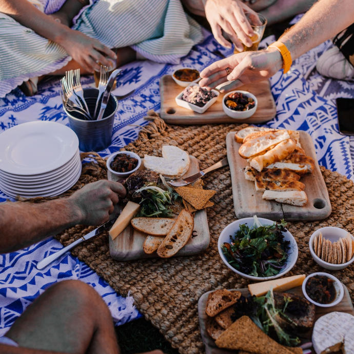

• Reduce or eliminate costly basement flooding and foundation damage
• Offer health benefits, including: clean air and water, stress reduction, tick and mosquito control
• Establish trees and shrubs that produce food year after year
• Reduce area of lawn that requires mowing
• Save on municipal stormwater infrastructure and treatment costs, which are passed on to residents through
reduced tax burden and/or stormwater credits2
• Save on utility bills through: shading from trees, water conserving landscapes, rooftop solar power, and/or
geothermal heating/cooling
• Reduce icing of driveways and sidewalks
• Provide due diligence for clients looking to buy a house or land so that hidden pitfalls can be identified before
the buyer “bets the farm”
2City of Ann Arbor, “Stormwater Credits,” accessed April 17, 2026, https://www.a2gov.org/systems-planning/water-resources/stormwater/stormwater-credits/.
